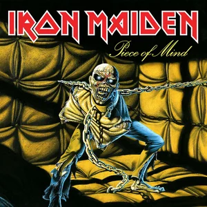

|

O álbum marca a estreia do baterista Nicko McBrain, bem como também é celebrado como o início da chamada fase clássica da banda, que duraria até 1988 e gravaria mais três álbuns de estúdio. |

Senjutsu foi o último álbum lançado pela banda, em 3 de setembro de 2021. Ao menos todos os integrantes da banda, tem 10 albuns gravados. E Steve Harris pode se sentir orgulhoso por ter lançado 5 discos em 5 decadas, 1980, 1990, 2000, 2010 e 2020. |

O Iron Maiden viu sua sorte mudar com o retorno da dupla: Bruce Dickinson(vocal) e Adrian Smith (guitarra), em 1999. A volta do duo foi coroada com o lançamento de Brave New World, décimo segundo registro de estúdio do grupo britânico, em 2000. |